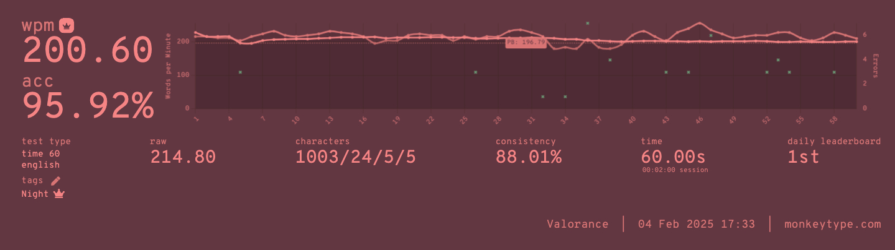

Home | 2025-09-06 Saturday 14:00 | Inspired by semi
Night is my ~5th major thumb alpha keyboard layout—excluding mods or minor swaps. Each prior layout was a rough experiment to see what I preferred.
You can find all of these on cmini.
Night is the amalgamation of all these lessons.
As of writing, it's been 476 days since Night existed in one form or another. In light of that, let's go by the most important points, shall we?
Even as a tailored layout, Night had some choices that I wasn't sure about.
LH is relatively low usage, sitting at ~9% sum letter frequency. I was worried this would "waste" the middle finger.
However, after much usage, I'm happy to report that I'm perfectly content with it. The H_L SFS is accounts for essentially all of Night's non-index, non-vowel SFSs and, speedtyping-wise, more than ¼ of Night's total SFSs on English-200. In general, combined with LL being the most frequently repeated letter, I never felt my middle finger underutilized.
With S being the 3rd "rarest" letter of the 10 most common letters, it relegates the ring with more movement than a more home row-centric layout. Due to the LH middle, this meant the ring would actually travel a greater distance than the middle finger. While I have used similar columns before (CSV—RSTHD), I really wasn't sure about having greater motion on the ring.
Again, however, this ended up being perfectly palatable. Unlike with CSV which has a noticeable amount of SFBs with SC, FSV essentially has no SFBs. This absence of "difficult" sequences made the ring fairly comfortable to use.
Plus, V could always be swapped to the T index.
Despite many concerns being resolved, there is definitely one persistent annoyance.
Night's Achilles' heel.
As I briefly mentioned in Night's negatives, Night's challenge with P is its tendency to form LSBs with vowels. This is an artifact from Night's original goal to maximize same-row bigrams.
Here is how Night was originally envisioned to be used:
What is now Nightingale, it is intended to be purposefully angled inwards, while keeping the fingers horizontal (indicated by the red lines). In this way, it made reaching specific keys like P, K, and V easy.
This style is certainly still usable on Night (and is what I personally use), but is unrealistic at a broadened scale, needing to "force" a specific hand positioning. Regardless, feel free to try it out and see if you like it.
Night has pretty much done everything I want out of a keyboard layout.
Night will remain my primary layout. I do absolutely intend to dabble in magic/arcane layouts, but I do not believe I will use a completely redesigned one as my "main" layout.
With three thumb keys being fairly commonplace, I will, likely, eventually use a repeat or magic key in addition to R on thumb.
Night is not a groundbreaking layout. That honor belongs to Dusk, SNTH, and RSTHD. Regardless, it has been an amazing experience for me, and I hope for everyone else who has tried, or is using it.
It's certainly not the most conventional layout, and it definitely has its quirks. But hey, what's a little fun without some challenge? In any case, if you decide to try it out, I hope you enjoy it!
Lastly, and most importantly,
To the members of AKL,
Thank you.
Valorance